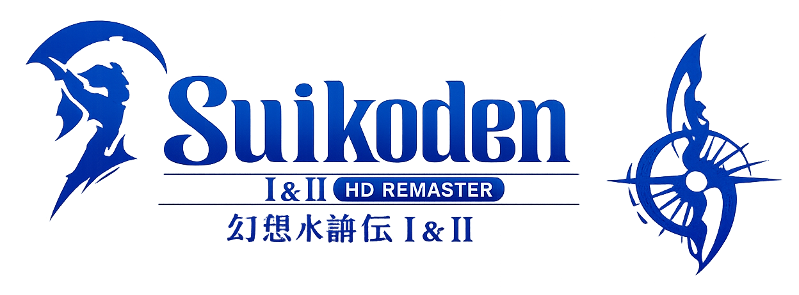

Suikoden Intégral (Remaster)
Retour aux Aventures en cours
La Guilde plonge au cœur de deux grandes guerres où le destin de royaumes entiers repose entre les mains de héros appelés à rassembler leurs propres armées.
📜 Informations de l'expédition
Origine : Aventure principale 🏆
Statut : En sommeil 💤
📅 Début : janvier 2026
🎮 Type : RPG / Aventure / Stratégie
👥 Participants : MK
📖 Histoire de l'aventure
Dans le premier chapitre, le destin d’un jeune héros bascule lorsqu’il découvre les véritables ambitions de l’Empire de la Lune Écarlate.
Devenu malgré lui l’un des acteurs d’une rébellion, il devra rassembler les 108 Étoiles du Destin et mener son armée pour libérer son pays de la tyrannie.
Dans le second chapitre, une nouvelle guerre éclate entre le Royaume de Highland et la Cité-État de Jowston.
Pris au cœur du conflit, un jeune héros et son meilleur ami voient leur destin bouleversé et devront faire face aux conséquences de la guerre, aux trahisons et aux choix qui façonneront l’avenir de leurs peuples.
🎯 Objectifs de l'expédition
- ⚔️ Rassembler nos forces
- 🏰 Affronter les conflits qui déchirent le royaume
- 🔮 Découvrir les secrets des True Runes
🎬 Souvenirs de l'expédition
Retrouvez les chroniques de cette aventure.